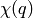

| Larch: X-ray Data Analysis |
create a Fourier transform window function.
perform a forward XAFS Fourier transform, from  to
to
 , using common XAFS conventions.
, using common XAFS conventions.
perform an inverse XAFS Fourier transform, from to
, using common XAFS conventions.
perform a forward XAFS Fourier transform, from to
, using common XAFS conventions. This version demands
chi to represent on a uniform  grid, and
returns the complex array of without putting any
values into a group.
grid, and
returns the complex array of without putting any
values into a group.
perform a reverse XAFS Fourier transform, from to
, using common XAFS conventions. This version demands
chir to represent the complex as created from
on a uniform grid, and returns the complex
array of without putting any values into a group.